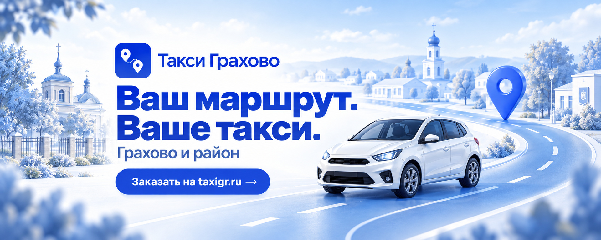

Синий фирменный стиль · VK
Знакомое такси.
Новый характер.
Предпросмотр · В VK ещё не применено
Цельное оформление: от обложки и меню до первой записи. Прежний знак, новый цвет и лёгкое движение.
Оформление в контексте

9:41●●● 100%
Такси ГраховоВаш маршрут. Ваше такси.
Живая обложка
Движение,
которое не отвлекает.
Мягкое приближение и возвращение. Один непрерывный цикл — 20 секунд, без звука.
Скачать видео · MP4 ↗Скачать статичную обложку ↗{kind=link}
Такси Грахово
Ваш маршрут. Ваше такси. Грахово и район.
Всё для вашей поездки
Нажмите на карточкуРядом с вашими планами
Заказ онлайн, остановки по пути, чат с водителем и история поездок. Для повседневных маршрутов — «Эконом». Для поездки с ребёнком — «Детский» с креслом.
{kind=link}
{kind=link}
Публикации и статья
Каждая карточка —
понятная история.
Откройте изображение, прочитайте готовый текст и скачайте материал для публикации.
Готово к загрузке
Весь комплект
15 изображений, живая обложка и тексты. Порядок установки описан в инструкции.
{kind=link}
{kind=link}
{kind=link}
{kind=link}
{kind=link}
{kind=link}
Основа стиля
Синий. Светлый. Свой.
Исходный знак сохранён. Иллюстрации объединяет объёмный маршрут, мягкий свет и белый автомобиль.
Главная обложка 1920 × 768 · Меню 752 × 512
Публикации 1200 × 1200 · Мобильная обложка 1080 × 1920
Публикации 1200 × 1200 · Мобильная обложка 1080 × 1920